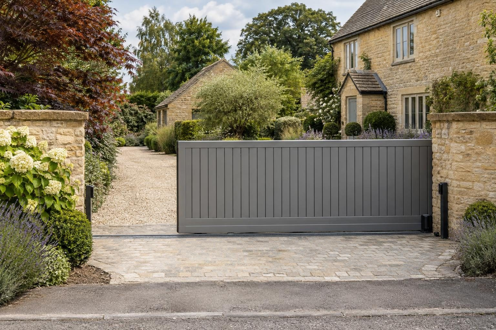

Driveway gates in Stamford
In Stamford's conservation area, new road-facing gates usually need planning permission, so we design them with the application in mind from the start.
Automated swing gates in Stamford typically cost £4,000–£8,000 supplied and fitted, and a new automated sliding gate £5,000–£10,000, with the power supply on top. Both are guide ranges, firmed up in writing after the visit. The biggest local factor is planning: an Article 4 direction across the whole conservation area removes permitted development for gates facing a road, footpath or open space, so most need permission from South Kesteven.
- Automated sliding gate
- £5,000–£10,000
- Planning
- Not needed up to 2m (1m by a road)
- Ground
- Limestone; usually free-draining
- Guarantee
- 5 years, in writing
Our 2026 guide prices. Your fixed price comes in writing after the site visit. Full breakdown: driveway gates cost guide.
Driveway gates in Stamford
Stamford was the first conservation area in Britain, and since December 2018 an Article 4 direction across the whole of it removes permitted development for gates, walls and fences that face a road, footpath or open space. In practice that means most new front gates in the conservation area need planning permission from South Kesteven District Council, and the design has to suit a town of limestone and Collyweston slate with more than 600 listed buildings.
Outside the conservation area the picture is simpler. On the Victorian streets along Rutland Terrace, Empingham Road, Tinwell Road, Ryhall Road and Casterton Road, the 1920s housing around Melbourne Road and New Cross Road, and the new estates on the north side of town, gates are normally permitted development up to 2m high, or 1m next to a road used by vehicles. Whichever side of the boundary you are on, we fit sliding and swing gates in aluminium and composite and force-test every automated one to the standard.
What makes Stamford different
Two things shape gate work in Stamford. The first is planning: inside the conservation area, the Article 4 direction means front gates usually need consent, and the council's appraisal favours natural, traditional materials, so we discuss style and finish with that in mind before you apply. The second is the ground. Lincolnshire Limestone is usually firm and free-draining, which suits post foundations, but old cellars and rubble fill turn up in older parts of town, and land in the Welland flood warning area needs electrics kept clear of floodwater.
A typical Stamford job is a Victorian house on one of the roads out from the centre, with a stone boundary wall and an open entrance onto the drive. The owners want a pair of automated swing gates hung on new or rebuilt piers, with a keypad for visitors and a cable run from the house. Where the property sits inside the conservation area, the job starts with a planning application.
Sources: Stamford Article 4 direction · Stamford conservation area appraisal.
Permissions in Stamford
- PlanningGates are normally permitted development up to 2m high, or 1m next to a road used by vehicles. They must not open outwards over the footway or road. In a conservation area or on a listed house, gates facing the road can need permission. Stamford's Article 4 direction brings some work facing a road, footpath or open space under planning control, so we check it against your address first. Planning Portal: fences, gates and walls
- TreesTrees in a conservation area need six weeks' notice before work, and protected trees need consent; both are free. Planning Portal: tree consent
- Design and priceWe measure up, check the ground and the planning position, and give you one fixed written price.
Rules checked October 2026.
What you get in Stamford
- Designs prepared with the Article 4 application in mind
- Ground checked for cellars and rubble fill
- Electrics placed with the Welland flood warning area in mind
- Sliding and swing gates in aluminium and composite, matched to your fencing
- Foundations and posts built for the gate's weight and the motor
- Automation, keypads, intercoms and remote fobs
The specification
- Survey of the opening, the slope and the power route
- Foundation beam or post footings in concrete
- Gate hung or track set, level and true
- Motor, controls and safety devices fitted
- Power by a registered electrician, then force-tested
- Five year workmanship guarantee in writing

Rated 5.0 from 37 Google reviews
“rutland driveway recently completed our resin driveway in Stamford. The team were great from the start. at first they done an AI mock up for us and we got to change colours etc until we were happy, then the final product looked even better!”
Victor, Stamford · Resin driveway — Google review
“Lewis, Connor and the team at Rutland Driveways laid a new block paved driveway and parking area, and dropped Kerb at our house in Ryhall, from the offset, everything was professional, clearly explained and very detailed , right from Lewis quoting, the quote was very detailed and explained everything that was included, it was …”
Peter, Ryhall · Block paved driveway and dropped kerb — Google review
Everything else we do here


Driveway gates in Stamford: questions
How much are electric gates in Stamford?
Do I need planning permission for gates in Stamford?
Will an aluminium gate be accepted in the conservation area?
My house is near the Welland. Can I still have an automated gate?
Driveway gates nearby
Request a site visit in Stamford
We measure up, check levels and drainage, and send a written proposal with the build-up, the programme and one whole price. No pressure and no follow-up sales calls.